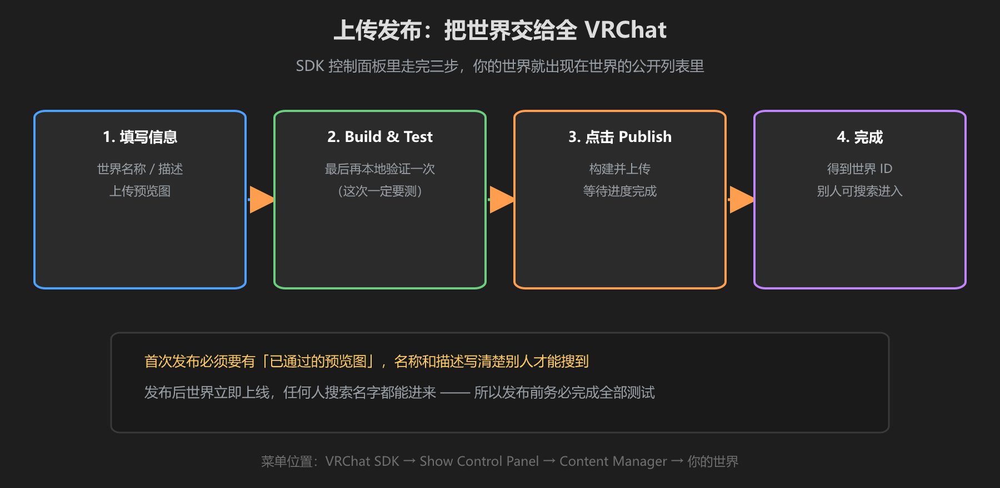
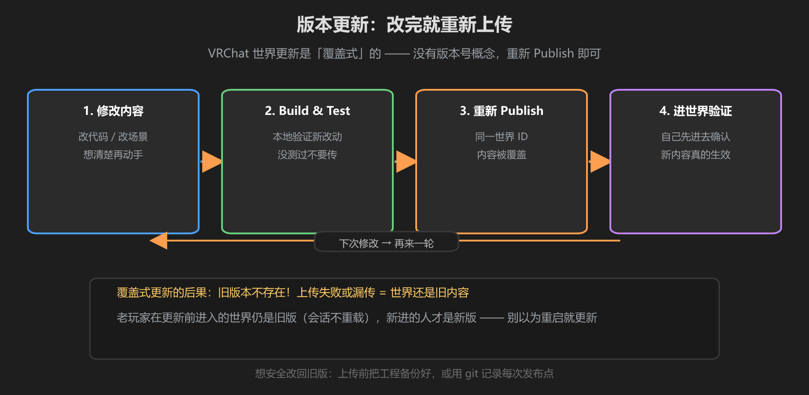

第 4 篇：上传发布 — 发布流程、命名规范、版本管理
测试都通过了，终于到了把世界交给全 VRChat 的时刻。发布不难，但发布前的一串小设置决定了别人找不找得到你、怎么看你。
1. 上传流程：SDK 面板三步

图：填写信息 → Build & Test → Publish → 完成
- 打开 VRChat SDK → Show Control Panel，进入 Content Manager
- 确认场景是当前打开的场景（坑：开错了场景传上去就是老世界）
- 填写世界名称、描述，上传预览图
- 点击 Publish，等待构建与上传进度完成
- 首次发布预览图需要审核通过，审核期间世界可能不可见
2. 世界命名与描述规范
- 名称：简洁、能搜到 —— 用你的世界核心卖点命名，别用「test1」「新建世界」这类
- 描述：写清楚玩法、人数建议、注意事项（如「建议 4 人游玩」「需要 PC 模式」）
- 语言：面向谁就写谁的语言；面向国际就写英文
预览图会决定第一印象：别人在世界的缩略图列表里看到的就是它。别用默认灰屏 —— 传一张能代表世界亮点、光线充足的截图。预览图在发布后仍可更新，更新后需要重新审核。
3. 版本管理：更新是覆盖式的！

图：修改 → Build & Test → 重新 Publish —— 同一世界 ID，内容被覆盖
VRChat 世界没有「版本号」概念：每次重新 Publish 都是覆盖式更新，旧版本不存在。这带来三个必须记住的规则：
- 改完必须重新上传：本地改了但没 Publish，线上永远是旧内容
- 上传失败 = 还是旧版：看到上传报错就修，别以为「反正传过了」
- 回滚靠备份：想退回旧版本，只能靠 git 提交记录或备份的工程重新上传
最容易误解的事：你在更新前就进入的世界，即使作者更新了，你的会话里仍是旧版（世界不会在会话中重载）。验证更新是否生效，要退出后重新进入。
4. 发布后测试：重新进世界验证
上传完成 ≠ 结束。发布后立刻：
- 在 VRChat 里搜索你的世界名称，确认能搜到、缩略图正确
- 以「陌生玩家」身份进入（换一个不常用的账号，或叫朋友进）
- 完整走一遍玩法流程，确认线上内容和本地一致
「我自己进过没问题」≈「在编辑器和 Build & Test 里没问题」之间还有一层 —— 线上世界加载的是上传的构建产物。所以发布后验证这步不能省，发现不对立刻修、立刻重传。
学前检查清单
- 会走完整的发布流程（信息 → Build & Test → Publish）
- 知道世界命名和描述的注意事项
- 理解了「覆盖式更新」和回滚只能靠备份
- 发布后会重新进世界验证新内容